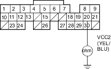

- Check for continuity between ECM/PCM connector terminal A20 and body ground.
ECM/PCM CONNECTOR A (31P)

Wire side of female terminals
Is there continuity?
YES - Repair short in the wire between the ECM/PCM (A20) and the EGR valve position sensor, knock sensor or TP sensor, or repair short in the wire between the ECM/PCM (A8) and the knock sensor. 
NO - Substitute a known-good ECM/PCM and recheck, refer to the '01 Civic Shop Manual (see page 11-313). If symptom/indication goes away, replace the original ECM/PCM.
- Turn the ignition switch OFF.
- Connect a scan tool/Honda PGM Tester, refer to the '01 Civic Shop Manual (see page 11-311).
- Turn the ignition switch ON (II) and read the scan tool/Honda PGM Tester.
Does the scan tool/Honda PGM Tester communicate with the ECM/PCM?
YES - Go to step 77.
NO - Go to step 73.
- Turn the ignition switch OFF.
- Disconnect ECM/PCM connector E (31P).
- Check for continuity between body ground and data link connector (DLC) terminal No. 7.
DATA LINK CONNECTOR (DLC)

Terminal side of female terminals
Is there continuity?
YES - Repair short in the wire between the DLC and the ECM/PCM (E23). After repairing it, check the DTC with the scan tool/Honda PGM Tester and go to the DTC Troubleshooting Index.
NO - Go to step 76.
- Check for continuity between ECM/PCM connector terminal E23 and DLC terminal No. 7.
DATA LINK CONNECTOR (DLC)

Wire side of female terminals
Is there continuity?
YES - Substitute a known-good ECM/PCM and recheck, refer to the '01 Civic Shop Manual on this CD (see page 11-313). If symptom/indication goes away, replace the original ECM/PCM.
NO - Repair open in the wire between the DLC and the ECM/PCM (E23). After repairing it, check the DTC with the scan tool/Honda PGM Tester and go to the DTC Troubleshooting Index.